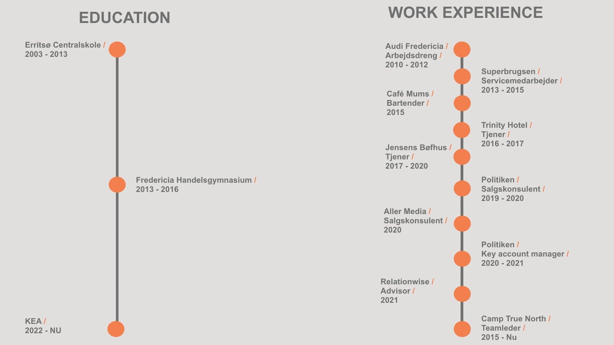

Jakob Tarp

CV
Om mig
Mit navn er Jakob og til daglig studerer jeg på KEA for at blive multimediedesigner og forhåbentlig, i fremtiden, digital konceptudvikler. Ud over at studere på KEA, så arbejder jeg som skuespiller i reklamer, kortfilm og serier. I mine ferier arbejder jeg på Camp True North som teamleder. Arbejdet går i sin enkelthed ud på at jeg guider et hold på 10-12 unge mennesker igennem nogle aktiviteter med det formål at de lærer dem selv bedre at kende og få en indre ro.
Nedenunder finder I links til min skuespiller hjemmeside og showreel